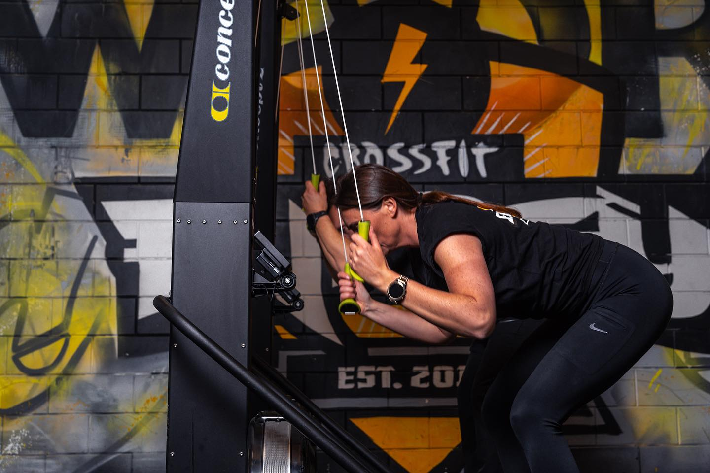
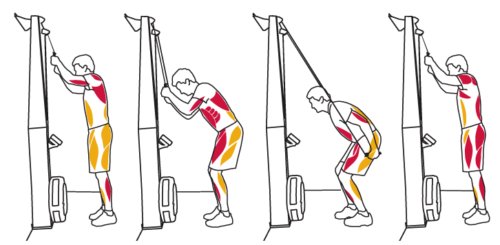

Les 2: Ski
Planning
- Algemene warming up
- Uitleg
- Oefenen met ski techniek
- Sprint drills
- Sprints
- Scores invullen

Ski
Drag factor
De vuistregel is dat de drag factor gelijk moet zijn aan het lichaamsgewicht in kilo’s. Weeg je 75 kg, begin dan met een drag factor van 75, en kijk vanaf daar wat je zelf fijn vindt. ::: –>
De juiste drag factor heeft temaken met het aantal slagen per minuut (RPM). Als het vliegwiel nog hard draait bij de volgende slag, kan je het niet verder versnellen, en ski je een stuk minder efficient. Het vliegwiel moet voldoende afremmen zodat jij het weer kan versnellen.
Bij een hoge RPM heeft het vliegwiel minder tijd om af te remmen, en dus moet de drag factor hoger om efficient te skieen.
Meer info over drag factor en hoe een ergometer werkt lees je in Les 1
Techniek
The stroke
Initiate the Pull: Start the movement by pushing through your legs, extending your hips, and pulling the handles towards your body.
Coordinate Movements: As you push through your legs, simultaneously engage your core and start pulling the handles with your arms. This creates a fluid and coordinated motion.
Use Your Arms: Once your legs are fully extended, continue the pull with your arms. Your elbows should be slightly bent, and your hands should be close to your body.
Finish the Pull: At the end of the pull, your body should be leaning slightly back, and the handles should be close to your chest. Your hands should be at about chest height.
Recovery
Extend Your Arms: Release the handles and extend your arms forward. Allow your body to follow, leaning slightly forward at the hips.
Bend Your Knees: As your arms extend, bend your knees and slide the seat forward to the starting position.

Tips om efficient te skieen
Smooth and Controlled: Aim for a smooth and controlled motion throughout the stroke. Avoid jerky movements.
Engage Core Muscles: Keep your core muscles engaged to stabilize your body and transfer power effectively.
Use Your Whole Body: The SkiErg is a full-body workout. Ensure you’re engaging both your upper and lower body in the movement.
Breathing: Establish a rhythmic breathing pattern. Inhale during the recovery phase and exhale during the pull phase.
Maintain Consistency: Strive for a consistent and even pace. This will help you sustain your energy throughout the workout.
Adjust Resistance: Depending on your fitness level, you can adjust the resistance on the SkiErg to increase or decrease the intensity of your workout.
Verzuring
Bij het skieen kunnen de armen behoorlijk verzuren.
Over het algemeen geldt dat een spier gaat verzuren zodra die meer dan 50%* van de maximale kracht levert. Fietsen doe je in een hoog tempo, dus hoeft de kracht niet zo heel hoog te zijn. Bij het roeien gebruik je heel veel spieren, zodat de totale kracht niet zo hoog is. Maar bij het skien moet alle kracht via de armen het apparaat in. Daardoor is de grens van verzuring veel eerder bereikt.
Om de armen te ontlasten is het aan te raden om ze de hele trek-fase van de beweging gebogen te houden (behalve bovenin). Hierdoor is de kracht die de armen moeten leveren wat minder. Het is wel efficient om het laatste stukje je armen helemaal te strekken, wat helpt bij het omhoog komen.
Sprint drills
Meer weten?
Uitleg video’s
Voor als ls je er alles van wilt weten: